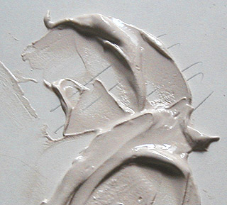
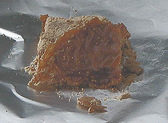

La
chaux
English
text

Pigments
compatibles :
Cliquer ici
Sur le
rinzaffo, l'arriccio et l'intonaco
lire passage in Courrier des Lecteurs
Sur le tadelakt
et différents aspects techniques
lire le chapitre XVI des
Dialogues de Dotapea
Le
cycle de la chaux
La chaux est avant tout un oxyde
de calcium (CaO) obtenu par la calcination des
pierres à chaux. Celles-ci sont des
carbonates de calcium (principalement la
calcite - CaCO3 -,
mais aussi le calcaire, la
craie et
le marbre) plus ou moins impurs. Pour les transformer en
chaux, on leur fait perdre leur CO2 par
calcination (terme
provenant du latin calx, chaux) aux alentours de 825°C.
Le CaO obtenu est inondé d'eau, ce qui
déclenche un lent processus dit extinction
(voir ci-dessous)
donnant des variétés différentes en fonction notamment de la quantité
d'eau initiale : le grassello (chaux
éteinte en pâte), le lait de
chaux, et enfin l'eau de chaux, hydroxyde de calcium (Ca(OH)2),
soit la chaux "typique", bien éteinte, séchée mais pas
carbonatée, se présentant sous forme
de poudre.
Au fil du temps,
la chaux absorbe et fixe
plus ou moins lentement le dioxyde de carbone atmosphérique ou marin.
Dans le cas de certains mortiers,
ce processus peut s'étaler sur des siècles. Plus couramment, il est
modérément court (lire
passage in Les dialogues de Dotapea, chap. XVI).
S'associant naturellement au carbone, la chaux redevient lentement le carbonate de calcium, la calcite
dont elle a
été extraite initialement par calcination. Ce processus, nommé
carbonatation, est
abordé dans une perspective artistique et décorative dans le chapitre XVI
des Dialogues de Dotapea (lien
direct). Il
est également possible de fixer artificiellement le carbone dans le CaO,
mais le produit obtenu, le carbure de calcium, s'enflamme ou explose au
contact de l'eau
(*).
|
Sommaire
Le
cycle de la chaux
Caractéristiques
du "liant chaux"
Sous l'enduit, le support
Chaux
et liant auxiliaire, chaux et eau, pulvérulence,
lissage (tadelakt, ferrage)
La chaux a-t-elle besoin d'autres liants ?
Mise en solution, application et séchage
Pulvérulence, tadelakt et ferrage
Chaux
et alun
Vertus
plastiques
Chaux vive
ou éteinte, dangerosité
Grasse ou maigre,
aérienne et/ou hydraulique
Utilisation
en peinture à l'huile
Badigeon
lait de chaux et chaulage
Autres
emplois de la chaux
|
Le processus naturel par lequel la chaux redevient
calcite est en partie comparable au dégazage massif qui a
permis à l'atmosphère terrestre de devenir respirable par fixation au sol
(marin) des
quantités colossales de gaz carbonique atmosphérique des débuts de notre
planète. Le carbone contenu dans ce gaz, associé au calcium des premiers coraux
(**) fut ainsi fixé dans les anciens
récifs tassés et devenus de gigantesques plateaux calcaires.
Aujourd'hui encore, les coraux ou ce qu'il en reste
continuent à recycler (davantage que les forêts) le gaz carbonique de l'air,
véhiculé par d'innombrables microorganismes marins charriés par les courants. Un
mur peint à la chaux remplit la même fonction - certes dans une proportion
infiniment moins déterminante, malheureusement pour la qualité de notre air et
celle de nos climats. Et ainsi elle ne fait que compenser l'émission initiale de
CO2 qui l'avait transformée de CaCO3 à CaO.
Caractéristiques
du "liant chaux"
La chaux est un produit très utile et connu depuis des temps immémoriaux (de l'ordre de
6000 ans ou plus). Elle a
la particularité de pouvoir être utilisée comme enduit protecteur, comme liant à fresque, comme complément
d'autres matériaux calciques et
comme composant majeur de mortiers. Elle permet à l'humidité de passer et, pour cette raison, vieillit bien,
naturellement, ne piégeant pas l'eau dans les murs (voir
tadelakt).
Cependant d'un point de vue pratique elle pose souvent la
question de l'interface avec son support. Par exemple, appliquée directement sur
un autre matériau calcique tel que le plâtre,
elle ne donne pas forcément de bons résultats. Un enduit est souvent nécessaire
pour réaliser cette interface.
Sous l'enduit, le
support
On citera parmi d'autres comme supports possibles la pierre bien
sûr, le béton et le ciment, le
béton cellulaire, le
carreau de plâtre et certaines
plaques de polystyrène extrudé pré-couvertes d'une couche de ciment fibré (lire
passage in
Courrier des Lecteurs).
Le bois n'est pas forcément conseillé à cause de ses
déformations. Le "liant chaux" devenant calcite au fil
du temps, il lui faut un support bien solide.
Chaux et
liants auxiliaires, chaux et eau, pulvérulence, lissage (tadelakt, ferrage)
La chaux
peut être mêlée à un autre liant (la
caséine
particulièrement - même si cette alliance semble contestable,
voir lien -, mais aussi
dans une certaine mesure l'acrylique, le vinyle, etc. - on
mentionne même le suif, que nous ne conseillerons pas). Certains auteurs prétendent
à l'inverse qu'elle n'aurait besoin que de très
petites quantités de liant auxiliaire, voire pas du tout. Le processus de
fixation du carbone serait généralement assez durcissant en lui-même,
disent-ils. Mais cette polémique n'a pas de sens car la question n'est pas là :
l'important est de savoir de quelle chaux on parle. Une chaux
aérienne est beaucoup trop pulvérulente pour être utilisée telle quelle. Une
chaux hydraulique le permet. Lire ci-dessous chaux
grasse et maigre.
Mise en solution, application et séchage
L'eau permet de
mettre en solution la chaux afin de l'appliquer sur le support. La qualité
de cette eau est importante. Une eau trop acide peut entraîner la
formation de sels indésirables.
Les conditions de séchage sont également déterminantes : si la
température de l'atelier ou du chantier est élevée, s'il y a du soleil, du
vent ou un courant d'air, l'eau s'évapore avant que la chaux commence à durcir
et celle-ci part en poudre.
Pulvérulence,
tadelakt et ferrage
Tout d'abord, il est conseillé, pour toutes ces raisons, de
pratiquer quelques
tests. Passez le doigt sur la surface séchée, vous saurez
tout de suite ce qu'il en est de la pulvérulence de la chaux que vous avez
appliquée. Il faut cependant tenir compte du fait que certains liants
auxiliaires sont plus lents à durcir après l'évaporation. Il est donc prudent de
retenter l'expérience quelques jours, voire quelques semaines plus tard (en
fonction de la nature et de la proportion de l'auxiliaire) pour se faire une
opinion fiable.
De plus, la pulvérulence n'est pas forcément un
handicap dans la mesure où l'on pratique souvent un traitement après séchage :
un lissage, une compression de la chaux.
En Europe, on désigne cette pratique sous
le terme de "ferrage", l'outil servant à lisser étant métallique. On dit aussi
quelquefois "serrage". Selon un aimable lecteur de Dotapea, ces deux termes seraient "en
fait identiques car le S et le F s'écrivaient souvent à l'identique dans
l'écriture manuscrite il y a quelques siècles et cela fait que, aujourd'hui, le
ferronnier et le serrurier travaillent tous deux le fer."
Au Maroc, ce n'est pas un fer mais un galet qui est utilisé. La technique
s'intitule tadelakt (lire absolument l'article du
glossaire).
Chaux et
alun
Nous découvrons progressivement les témoignages de l'utilisation
d'alun dans la chaux. Il semblerait agir
comme agent durcissant et augmentant la "permanence" de la peinture,
tout comme il le fait dans le domaine de la teinture.

Vertus plastiques
Grasse ou même un peu maigre, la chaux sèche est assez transparente, comparée au
plâtre par exemple. Cette propriété de transparence
est l'une des clés qui l'ont rendue aussi populaire que "de bon ton" depuis des milliers d'années :
elle ne s'impose pas lourdement, elle modifie les surfaces picturales, sans
plus. Certains auteurs vont jusqu'à affirmer peut-être exagérément qu'un
badigeon à la chaux ayant bien vieilli (ayant bien fixé le carbone atmosphérique)
finit par prendre l'apparence d'un glacis.
La chaux présente une très relative élasticité (par rapport au plâtre) et
seulement pendant un temps limité, mais
surtout, comme on l'a dit, une aptitude à laisser l'eau s'échapper, propriétés qui la mettent
à peu près à l'abri
de certains accidents picturaux comme les craquelures et les cloques.
Chaux
vive ou éteinte,
dangerosité
En ce qui concerne la chimie de la chaux pure (distinguée de la calcite et
des chaux siliceuses), il existe deux catégories principales
:
* la chaux vive, monoxyde de calcium, CaO
* la chaux éteinte, hydraulique
ou aérienne. C'est un hydroxyde de calcium Ca(OH)2.
La chaux vive est transformée en chaux éteinte par un processus violent et dangereux donnant lieu à bouillonnement, mousse et échauffement
(400°C). La chaux vive, avide d'eau, brûlante, est
un produit extrêmement dangereux. Le processus d'extinction est long.
Trois mois de trempage est vraiment un minimum. Les Anciens considéraient que
trois ans étaient nécessaires. Une chaux mal éteinte est dangereuse, mais son
emploi est bien spécialisé. Il ne
concerne pratiquement que certaines chaux destinées au
chaulage.
Comme on l'a dit, la chaux éteinte conserve un pH assez élevé.
Cela signifie que sans être véritablement caustique, elle n'est pas anodine.
L'emploi de gants, de protections, n'est pas un luxe pour
un emploi massif ou répété. Éviter le contact avec la peau et surtout avec les yeux.
Certains auteurs comparent sa dangerosité à celle de
l'eau de Javel, dans le sens où elle est quand même manipulable sans trop de
danger moyennant quelques précautions.
On évoque parfois des chaux qui
blanchissent grandement au séchage. En fait, tout dépend de la pureté de la
chaux. Une chaux maigre (voir ci-dessous), chargée de silice, blanchira
évidemment plus qu'une chaux grasse. La présence d'huile de lin peut
également influer sur l'aspect de la chaux (coloration brune, transparence).
Toutes les formes de chaux non
carbonatées sont assez
fortement alcalines.
Pour cette raison, à tort ou à raison elles ont assez souvent été associées à la
caséine,
parfois dès la préparation de celle-ci.
Grasse ou maigre,
aérienne ou hydraulique
En fonction de sa charge initiale en argile plus
ou mois pure (concentration en silice, élément parfois
adjoint artificiellement lors de la cuisson initiale),
la chaux est :
*
grasse (pas d'argile, donc abondance
proportionnelle du liant, ce qui correspond à la définition du gras).
Elle augmente au contact de
l'eau, ne se combinant pas à celle-ci, ne la retenant en aucune manière : l'argile, jouant le rôle d'agent
de liaison avec l'eau est ici absente. La chaux grasse ne se combine qu'à
l'air, d'où l'appellation de "chaux
aérienne". Elle réduit un peu à la prise. Elle peut
être utilisée dans certains cas en peinture, notamment en très petites quantités
en
émulsion
avec les huiles à peindre, mais surtout, très couramment, avec de la caséine et en badigeons.
* ou
maigre (présence d'argile, de silice).
C'est la "chaux hydraulique".
Elle s'utilise étendue
d'eau, comme enduit (blanc de chaux) pour les peaux et en
agriculture, mais aussi bien sûr dans le domaine de la construction (voir
ciment et
béton). Elle est traitée par action de l'eau sur
une
variété particulière de chaux vive
chargée d'argile cuite (donc maigre).
Elle réduit moins à la prise que la chaux grasse.
Par contre, on mentionne une coloration blanche apparaissant au séchage.
La chaux maigre est dite hydraulique parce qu'elle est capable de
durcir même en présence d'eau, voire dans l'eau.
Les premières études poussées sur la chaux hydraulique ne dateraient que du
XIXème siècle (Vicat et Johnson).
Important : qu'elle soit aérienne ou
hydraulique, une chaux peut être dite maigre si elle contient de grandes quantités d'impuretés. En ce
cas, elle n'a pas tellement d'emplois en arts plastiques ni en décoration.
"Maigre" ou "grasse", cela réfère à la définition du liant. Tout ce qui
est liant (insaturé) peut être dit gras. Voir
définition. Par conséquent, une chaux hydraulique, donc chargée de
silice (saturée), est maigre par rapport à une chaux aérienne. Une chaux
aérienne impure peut être dite maigre, mais une chaux hydraulique peut
difficilement être nommée "maigre" puisqu'elle l'est par définition. Une
certitude : une chaux, quelle qu'elle soit, lorsqu'elle est peu liante
par rapport à la norme, peut tout
simplement être nommée "impure". Les termes "chaux grasse" ou maigre
pourraient être mis au rebus car ils entretiennent la confusion. Leur
vocation n'est pas de masquer le fait qu'une chaux est pure ou impure.
Utilisation
en peinture à l'huile
L'adjonction d'huile dans ou sur la chaux est bien connue dans le domaine de la peinture
décorative. Rien n'empêche l'artiste peintre de faire de même, mais à ses
risques et périls.

La chaux - en quantité notable - mise en présence d'huile devient brunâtre. Ce phénomène s'accroît
terriblement avec le
temps, nous l'avons constaté (voir ci-contre un mélange huile-chaux
parfaitement raté : après dix-huit mois, l'huile a bruni considérablement, elle s'est
concentrée en une sorte de croûte - la chaux était trop imbibée d'eau - mais
heureusement, l'ensemble évoque un bon gâteau). Il ne faut pas oublier qu'une réaction chimique douce,
la saponification, se produit
lorsque l'on met un ester (l'huile) en présence d'une
base (la chaux). Une raison de plus pour employer ce
produit puissant à doses minimes.
Il existe deux manières de placer la chaux dans l'huile :
* en jetant la poudre telle quelle
* en la mêlant à un peu d'eau pour réaliser une
sorte d'émulsion.
La deuxième solution est viable seulement si la proportion d'eau est
faible. L'eau est indispensable (sans quoi la chaux joue le rôle d'un siccatif
monstrueux), mais en trop grande
quantité, sa présence provoque des craquelures,
des effritements (constatés expérimentalement). Phénomène étonnant quand on pense que le mariage
s'effectue
parfaitement lorsque l'huile est, à l'inverse, en très petite quantité. Une certitude, donc
: le dosage est déterminant.
A la lumière de nos expérimentations sur le mélange huile-chaux, il apparaît que
l'huile doit
être considérée comme un adjuvant (plus qu'un émulsifiant) de peu d'intérêt en
peinture artistique. Elle a
quand même quelques atouts anecdotiques :
* elle homogénéise les mélanges par sa viscosité, un peu à la
manière de la standolie, au point de détruire les
reliefs,
* elle freine la
chute de charges cristalloïdes telles que l'hydrate
d'alumine ou la poudre de
marbre. Pourquoi, comment ? On peut poser plusieurs hypothèses. D'abord, la
chaux est fortement visqueuse. Elle a du liant. Elle freinerait donc ce mouvement en
s'associant plus rapidement que l'huile aux autres éléments présents. De plus, elle réagit
non seulement par saponification de l'huile, mais aussi par association avec
le carbone qu'elle peut trouver dans la pâte (voire peut-être aussi le
soufre et d'autres éléments). Au cours de ces échanges, il n'est pas exclu qu'elle dégage un peu
d'oxygène, "assimilé" par l'huile dans le cadre de la réaction
normale de siccativation.
Il ne s'agit vraiment que d'hypothèses, mais les temps de séchages nous ont
quand même semblé fort courts, même avec de petites quantités et même en
empâtement,
* la transparence de la chaux placée dans
l'huile est assez notable. A ce point de vue, elle se comporte infiniment mieux
que par exemple un blanc de Meudon, qui contient également du calcium. Mais gare
aux évolutions dans les mois qui suivent (voir
ci-dessus).
Présente dans certains médiums du
commerce, elle ne doit pas être méprisée d'une manière univoque et définitive,
mais son emploi nécessite une grande parcimonie.
Badigeon
lait de chaux et chaulage
Pour commencer, signalons que ces techniques peuvent nécessiter
l'intervention d'un professionnel spécialisé. Il existe certains dangers à la
fois pour le manipulateur et tout simplement pour le résultat. La question de
l'enduction préalable, particulièrement, nécessite un avis d'initié.
Le lait de chaux, employé dans la
technique du badigeon, est constituée
typiquement ainsi (recette Sennelier que nous communiquons telle quelle
ou presque à titre indicatif) :
* un volume de chaux aérienne en solution dans
2 à 3 volumes d'eau
* 10 à 25% en volume de pigments (10% pour les pigments les plus couvrants
comme les oxydes ferreux)
* 10 à 15% en volume d'un liant comme la caséine, l'acrylique ou le vinyle - le liant auxiliaire
joue un rôle déterminant car c'est lui qui empêche le lait de devenir
trop pulvérulent au séchage. Certains auteurs évoquent cependant des
quantités beaucoup plus faibles (une cuillerée à soupe pour un seau !).
Nous conseillons de faire quelques essais préalables.
* 5% de savon liquide ou de liquide vaisselle.
Le "lait de chaux" peut en fait avoir une composition fort variable.
Un badigeon plus épais, destiné au "chaulage",
peut être préparé avec les mêmes ingrédients mais seulement un volume d'eau
pour un volume de chaux.
ATTENTION : certaines chaux destinées au
chaulage ne sont pas totalement éteintes. Elles doivent donc être manipulées avec des
protections pour les mains et les yeux, voire l'ensemble du corps. Elles ne
doivent pas être appliquées par temps de pluie, par fort ensoleillement ou par
grand vent. Elles sont parfois nommées "chaux blanches naturelles".
Si le chaulage est un traitement assez lourd, le badigeon doit, lui, être
appliqué en couches fines plutôt diluées, mettant pleinement à profit la
transparence de la chaux.
Les surfaces doivent être poreuses, propres, sans graisses. Elles doivent
être mouillées et souvent "re-mouillées" pendant l'application.
Voir aussi Le crépi
Autres
emplois de la chaux
Signalons pour l'instant l'emploi de chaux comme fondant dans la fabrication
du verre (lire passage in Le verre).
Voir aussi : page consacrée à la caséine, article
du glossaire sur le badigeon.
Voir également stuc, calcaire,
craie, marne, Autres
huiles de lin et autres applications in Huile de lin.
_____
(*) L'opération, assez brutale, est
réalisée dans un four à arc électrique porté à 1700, 1800, voire 2000°C :
CaO + 3C + 108 300 calories =
CaC2 + CO
Où CaC2 est le carbure de calcium. Il a
longtemps été utilisé pour produire une substance importante - y compris pour
les arts plastiques -,
l'acétylène, qu'il
dégage au contact de l'eau :
CaC2 + 2 H2O
= Ca(OH)2 + C2H2 + chaleur (31
kcal)
Où Ca(OH)2 est de la chaux éteinte et C2H2,
de l'acétylène.
Bien que l'acétylène soit principalement produite de
nos jours par l'industrie pétrochimique, le carbure de calcium est encore
fabriqué. L'une de ses utilisations concerne... les ingénieuses lampes à
acétylène des spéléologues.
Pour retourner au corps du texte,
cliquez sur le bouton "Précédent" de votre navigateur
(**) Les coraux semblent
jouer le rôle de patients fixateurs du carbone atmosphérique, à
l'aide du calcium marin et de microorganismes intermédiaires (le plancton
notamment). Les premiers coraux ont ainsi transformé l'atmosphère terrestre
initiale. Ce sont essentiellement eux qui ont rendu vivable la surface de notre
planète, tôt dans son histoire. Ainsi, les stromatolithes, premières roches
coralliennes connues, dateraient environ de 3,5 milliards d'années.
Citons un court extrait d'un texte de Hervé Morin qui
apporte un intéressant éclairage sur la nature typique du corail.
"[les] récifs coralliens [sont] le fruit du patient
travail de petits polypes, semblables à de minuscules méduses, qui édifient un
squelette calcaire dans lequel ils s'abritent. Ils vivent en symbiose avec des
micro algues unicellulaires, les zooxanthelles. Celles-ci bénéficient de
certains composés organiques produits par le polype et fournissent, en échange,
un apport supplémentaire d'oxygène à travers la photosynthèse. Les zooxanthelles
protègent également la calcification, en dégradant certains acides produits par
les polypes. Mais il suffit d'un stress causé, par exemple, par une élévation
sensible de la température de l'eau, pour que les zooxanthelles soient expulsées
et que s'engage le processus - parfois réversible - de blanchiment du corail."
Pour autant, il existe également des "coraux des
profondeurs" qui ne répondent pas à ces critères. Découverts plus récemment,
fonctionnant différemment, ils sont emblématiques d'une question essentielle qui
ne peut être présentée autrement qu'en forme de point d'interrogation à ce jour.
Pour retourner au corps du texte,
cliquez sur le bouton "Précédent" de votre navigateur
Retour
début de page